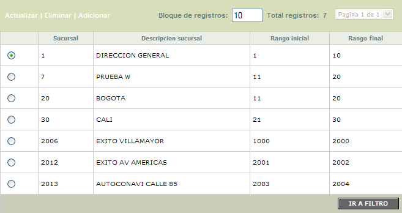
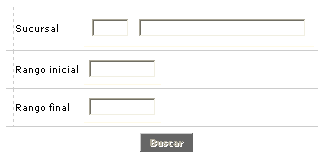
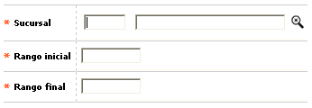
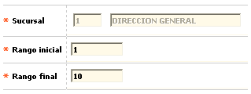

Boletas de ruta |
A través de esta opción se permite la definición de los números consecutivos de los comprobantes de control permitidos por cada oficina en la captura del movimiento, producto de la operación diaria. El sistema valida que los diferentes rangos asignados no se sobrepongan unos a otros para garantizar así que una misma boleta no pueda ser asignada a dos o mas sucursales diferentes.
El formulario contiene las opciones Actualizar, Eliminar, y Adicionar. Adicionalmente, cuenta con un filtro de búsqueda.

Filtro: Se pueden realizar consultas a través de las siguientes opciones:

Sucursal |
Campo que contiene una lista de valores poblada previamente en la opción Estructura orgánica del Núcleo, en la cual se digita una sucursal a consultar. |
Rango inicial |
Campo numérico de 8 posiciones, en el cual se registra la oficina o sucursal a consultar |
Rango final |
Campo numérico de 8 posiciones, en el cual se registra la oficina o sucursal a consultar |
Adicionar: Si el usuario invoca la opción Adicionar se despliega un formulario con los siguientes campos:

Sucursal |
Campo obligatorio que contiene una lista de valores poblada previamente en la opción Estructura orgánica del Núcleo, a través de la cual la entidad selecciona a cuál oficina se le genera restricciones en el consecutivo de boletas de ruta (o comprobantes de control) permitiendo o suspendiendo la captura de movimiento. |
Rango inicial |
Campo numérico de 8 posiciones, requerido, en el cual se registra valor consecutivo inicial, que se permite a la oficina o sucursal en el momento de capturar movimiento en los comprobantes de control. |
Rango final |
Campo numérico de 8 posiciones, requerido, en el cual se registra valor consecutivo final, que se permite a la oficina o sucursal en el momento de capturar movimiento en los comprobantes de control. |
Actualizar: Si el usuario invoca la opción Actualizar se despliega un nuevo formulario en el cual los únicos campos modificables son: Rango inicial y Rango final.
